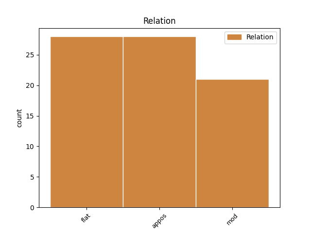
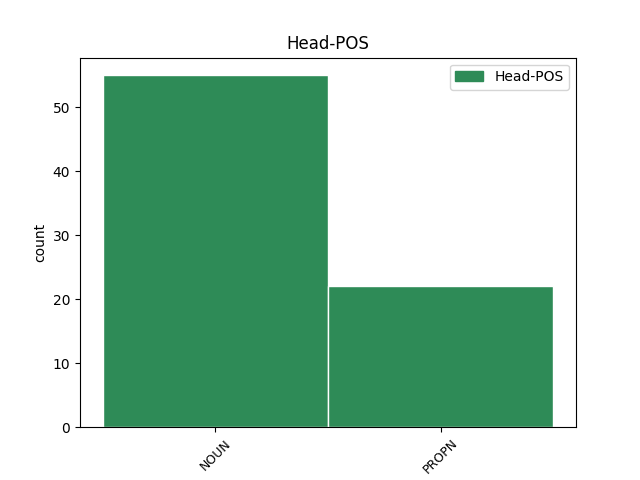
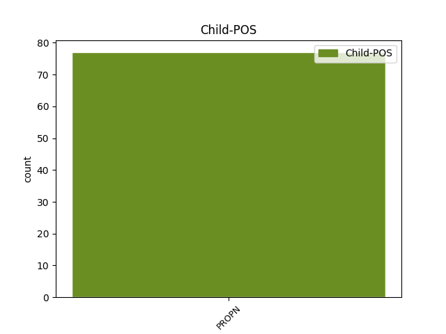

Distribution of features within this leaf



Agreement Rules sorted by frequency.
- When the dependent token is the appositional modifier(appos) of the head token, and the head token is NOUN and the dependent token is PROPN.
1 Tha _ _ _ _ 0 _ _ _
2 an _ _ _ _ 0 _ _ _
3 dà _ _ _ _ 0 _ _ _
4 phreasantair preasantair NOUN Ncsmn Case=Nom|Gender=Masc|Number=Sing 0 _ _ _
5 aig _ _ _ _ 0 _ _ _
6 TNG _ _ _ _ 0 _ _ _
7 – _ _ _ _ 0 _ _ _
8 Cathaidh Cathaidh PROPN Nn-fn Case=Nom|Gender=Fem 4 appos _ _
9 Bhàn _ _ _ _ 0 _ _ _
10 agus _ _ _ _ 0 _ _ _
11 Dòmhnall _ _ _ _ 0 _ _ _
12 Ruadh _ _ _ _ 0 _ _ _
13 – _ _ _ _ 0 _ _ _
14 a’ _ _ _ _ 0 _ _ _
15 cur _ _ _ _ 0 _ _ _
16 an _ _ _ _ 0 _ _ _
17 dreach _ _ _ _ 0 _ _ _
18 fhèin _ _ _ _ 0 _ _ _
19 air _ _ _ _ 0 _ _ _
20 a’ _ _ _ _ 0 _ _ _
21 phrògram _ _ _ _ 0 _ _ _
22 , _ _ _ _ 0 _ _ _
23 agus _ _ _ _ 0 _ _ _
24 tha _ _ _ _ 0 _ _ _
25 sinn _ _ _ _ 0 _ _ _
26 a’ _ _ _ _ 0 _ _ _
27 faireachdainn _ _ _ _ 0 _ _ _
28 gu _ _ _ _ 0 _ _ _
29 bheil _ _ _ _ 0 _ _ _
30 iad _ _ _ _ 0 _ _ _
31 còmhla _ _ _ _ 0 _ _ _
32 ruinn _ _ _ _ 0 _ _ _
33 anns _ _ _ _ 0 _ _ _
34 an _ _ _ _ 0 _ _ _
35 dachaigh _ _ _ _ 0 _ _ _
36 , _ _ _ _ 0 _ _ _
37 a’ _ _ _ _ 0 _ _ _
38 bruidhinn _ _ _ _ 0 _ _ _
39 mu _ _ _ _ 0 _ _ _
40 rudan _ _ _ _ 0 _ _ _
41 annasach _ _ _ _ 0 _ _ _
42 a _ _ _ _ 0 _ _ _
43 tha _ _ _ _ 0 _ _ _
44 a’ _ _ _ _ 0 _ _ _
45 tachairt _ _ _ _ 0 _ _ _
46 air _ _ _ _ 0 _ _ _
47 feadh _ _ _ _ 0 _ _ _
48 na _ _ _ _ 0 _ _ _
49 dùthcha _ _ _ _ 0 _ _ _
50 agus _ _ _ _ 0 _ _ _
51 aig _ _ _ _ 0 _ _ _
52 an _ _ _ _ 0 _ _ _
53 taigh _ _ _ _ 0 _ _ _
54 , _ _ _ _ 0 _ _ _
55 agus _ _ _ _ 0 _ _ _
56 tha _ _ _ _ 0 _ _ _
57 an _ _ _ _ 0 _ _ _
58 stiùiriche _ _ _ _ 0 _ _ _
59 a’ _ _ _ _ 0 _ _ _
60 dèanamh _ _ _ _ 0 _ _ _
61 oidhirp _ _ _ _ 0 _ _ _
62 air _ _ _ _ 0 _ _ _
63 gàire _ _ _ _ 0 _ _ _
64 beag _ _ _ _ 0 _ _ _
65 a _ _ _ _ 0 _ _ _
66 thoirt _ _ _ _ 0 _ _ _
67 oirnn _ _ _ _ 0 _ _ _
68 , _ _ _ _ 0 _ _ _
69 ’s _ _ _ _ 0 _ _ _
70 cha _ _ _ _ 0 _ _ _
71 mhisde _ _ _ _ 0 _ _ _
72 sinn _ _ _ _ 0 _ _ _
73 sin _ _ _ _ 0 _ _ _
74 . _ _ _ _ 0 _ _ _
1 Tha _ _ _ _ 0 _ _ _
2 an _ _ _ _ 0 _ _ _
3 t-Ollamh ollamh NOUN Ncsmn Case=Nom|Gender=Masc|Number=Sing 0 _ _ _
4 Eric Eric PROPN Nn-mn Case=Nom|Gender=Masc 3 flat _ _
5 Richards _ _ _ _ 0 _ _ _
6 , _ _ _ _ 0 _ _ _
7 Sasannach _ _ _ _ 0 _ _ _
8 a _ _ _ _ 0 _ _ _
9 tha _ _ _ _ 0 _ _ _
10 ag _ _ _ _ 0 _ _ _
11 obair _ _ _ _ 0 _ _ _
12 an _ _ _ _ 0 _ _ _
13 Astràilia _ _ _ _ 0 _ _ _
14 ach _ _ _ _ 0 _ _ _
15 a _ _ _ _ 0 _ _ _
16 bha _ _ _ _ 0 _ _ _
17 bliadhnaichean _ _ _ _ 0 _ _ _
18 an _ _ _ _ 0 _ _ _
19 Oilthigh _ _ _ _ 0 _ _ _
20 Shruighlea _ _ _ _ 0 _ _ _
21 , _ _ _ _ 0 _ _ _
22 air _ _ _ _ 0 _ _ _
23 mòran _ _ _ _ 0 _ _ _
24 a _ _ _ _ 0 _ _ _
25 sgrìobhadh _ _ _ _ 0 _ _ _
26 mu _ _ _ _ 0 _ _ _
27 na _ _ _ _ 0 _ _ _
28 fuadaichean _ _ _ _ 0 _ _ _
29 , _ _ _ _ 0 _ _ _
30 ach _ _ _ _ 0 _ _ _
31 an _ _ _ _ 0 _ _ _
32 uair _ _ _ _ 0 _ _ _
33 a _ _ _ _ 0 _ _ _
34 nochd _ _ _ _ 0 _ _ _
35 a’ _ _ _ _ 0 _ _ _
36 chiad _ _ _ _ 0 _ _ _
37 aithris _ _ _ _ 0 _ _ _
38 mun _ _ _ _ 0 _ _ _
39 leabhar _ _ _ _ 0 _ _ _
40 ùr _ _ _ _ 0 _ _ _
41 aige _ _ _ _ 0 _ _ _
42 , _ _ _ _ 0 _ _ _
43 am _ _ _ _ 0 _ _ _
44 measg _ _ _ _ 0 _ _ _
45 na _ _ _ _ 0 _ _ _
46 chaidh _ _ _ _ 0 _ _ _
47 a _ _ _ _ 0 _ _ _
48 ràdh _ _ _ _ 0 _ _ _
49 bha _ _ _ _ 0 _ _ _
50 gun _ _ _ _ 0 _ _ _
51 robh _ _ _ _ 0 _ _ _
52 e _ _ _ _ 0 _ _ _
53 dol _ _ _ _ 0 _ _ _
54 a _ _ _ _ 0 _ _ _
55 thoirt _ _ _ _ 0 _ _ _
56 dealbh _ _ _ _ 0 _ _ _
57 gleansach _ _ _ _ 0 _ _ _
58 air _ _ _ _ 0 _ _ _
59 an _ _ _ _ 0 _ _ _
60 duine _ _ _ _ 0 _ _ _
61 ’s _ _ _ _ 0 _ _ _
62 e _ _ _ _ 0 _ _ _
63 a’ _ _ _ _ 0 _ _ _
64 cumail _ _ _ _ 0 _ _ _
65 a-mach _ _ _ _ 0 _ _ _
66 gun _ _ _ _ 0 _ _ _
67 robh _ _ _ _ 0 _ _ _
68 na _ _ _ _ 0 _ _ _
69 Gaidheil _ _ _ _ 0 _ _ _
70 iad _ _ _ _ 0 _ _ _
71 fhéin _ _ _ _ 0 _ _ _
72 ri _ _ _ _ 0 _ _ _
73 ’n _ _ _ _ 0 _ _ _
74 coireachadh _ _ _ _ 0 _ _ _
75 son _ _ _ _ 0 _ _ _
76 na _ _ _ _ 0 _ _ _
77 thachair _ _ _ _ 0 _ _ _
78 riutha _ _ _ _ 0 _ _ _
79 . _ _ _ _ 0 _ _ _
1 Tha _ _ _ _ 0 _ _ _
2 Màiri Màiri PROPN Nn-fn Case=Nom|Gender=Fem 0 _ _ _
3 Anna Anna PROPN Nn-fn Case=Nom|Gender=Fem 2 flat _ _
4 NicUalraig _ _ _ _ 0 _ _ _
5 dhen _ _ _ _ 0 _ _ _
6 a’ _ _ _ _ 0 _ _ _
7 bheachd _ _ _ _ 0 _ _ _
8 gun _ _ _ _ 0 _ _ _
9 robh _ _ _ _ 0 _ _ _
10 seo _ _ _ _ 0 _ _ _
11 riatanach _ _ _ _ 0 _ _ _
12 air _ _ _ _ 0 _ _ _
13 son _ _ _ _ 0 _ _ _
14 neart _ _ _ _ 0 _ _ _
15 a’ _ _ _ _ 0 _ _ _
16 phrògraim _ _ _ _ 0 _ _ _
17 . _ _ _ _ 0 _ _ _
1 Ann _ _ _ _ 0 _ _ _
2 an _ _ _ _ 0 _ _ _
3 1979 _ _ _ _ 0 _ _ _
4 , _ _ _ _ 0 _ _ _
5 gu _ _ _ _ 0 _ _ _
6 mì-fhortanach _ _ _ _ 0 _ _ _
7 an _ _ _ _ 0 _ _ _
8 déidh _ _ _ _ 0 _ _ _
9 bàs _ _ _ _ 0 _ _ _
10 Dhòmhnall _ _ _ _ 0 _ _ _
11 Alasdair _ _ _ _ 0 _ _ _
12 ( _ _ _ _ 0 _ _ _
13 bh. _ _ _ _ 0 _ _ _
14 1978 _ _ _ _ 0 _ _ _
15 ) _ _ _ _ 0 _ _ _
16 lorg _ _ _ _ 0 _ _ _
17 mi _ _ _ _ 0 _ _ _
18 fhéin _ _ _ _ 0 _ _ _
19 agus _ _ _ _ 0 _ _ _
20 an _ _ _ _ 0 _ _ _
21 Dr _ _ _ _ 0 _ _ _
22 Bruford _ _ _ _ 0 _ _ _
23 teacs _ _ _ _ 0 _ _ _
24 den _ _ _ _ 0 _ _ _
25 sgeulachd _ _ _ _ 0 _ _ _
26 am _ _ _ _ 0 _ _ _
27 measg _ _ _ _ 0 _ _ _
28 phàipeirean pàipeir NOUN Ncpmg Case=Gen|Gender=Masc|Number=Plur 0 _ _ _
29 Alasdair Alasdair PROPN Nn-mg Case=Gen|Gender=Masc 28 mod _ _
30 MhicGille-Mhìcheil _ _ _ _ 0 _ _ _
31 an _ _ _ _ 0 _ _ _
32 Oilthigh _ _ _ _ 0 _ _ _
33 Dhùn _ _ _ _ 0 _ _ _
34 Èideann _ _ _ _ 0 _ _ _
35 . _ _ _ _ 0 _ _ _
Disagree Examples:
1 Sgrùd _ _ _ _ 0 _ _ _
2 ise _ _ _ _ 0 _ _ _
3 a _ _ _ _ 0 _ _ _
4 bha _ _ _ _ 0 _ _ _
5 an _ _ _ _ 0 _ _ _
6 làthair _ _ _ _ 0 _ _ _
7 is _ _ _ _ 0 _ _ _
8 thug _ _ _ _ 0 _ _ _
9 i _ _ _ _ 0 _ _ _
10 an _ _ _ _ 0 _ _ _
11 aire _ _ _ _ 0 _ _ _
12 do _ _ _ _ 0 _ _ _
13 shùilean sùil NOUN Ncpfd Case=Dat|Gender=Fem|Number=Plur 0 _ _ _
14 mear _ _ _ _ 0 _ _ _
15 Iain Iain PROPN Nn-mg Case=Gen|Gender=Masc 13 mod _ SpaceAfter=No
16 , _ _ _ _ 0 _ _ _
17 ged _ _ _ _ 0 _ _ _
18 a _ _ _ _ 0 _ _ _
19 b' _ _ _ _ 0 _ _ _
20 e _ _ _ _ 0 _ _ _
21 Tormod _ _ _ _ 0 _ _ _
22 a _ _ _ _ 0 _ _ _
23 thuirt _ _ _ _ 0 _ _ _
24 a-rithist _ _ _ _ 0 _ _ _
25 gu _ _ _ _ 0 _ _ _
26 robh _ _ _ _ 0 _ _ _
27 na _ _ _ _ 0 _ _ _
28 sùilean _ _ _ _ 0 _ _ _
29 aicese _ _ _ _ 0 _ _ _
30 coltach _ _ _ _ 0 _ _ _
31 ri _ _ _ _ 0 _ _ _
32 glumag _ _ _ _ 0 _ _ _
33 dhorcha _ _ _ _ 0 _ _ _
34 , _ _ _ _ 0 _ _ _
35 dhomhainn _ _ _ _ 0 _ _ _
36 far _ _ _ _ 0 _ _ _
37 am _ _ _ _ 0 _ _ _
38 bogadh _ _ _ _ 0 _ _ _
39 tu _ _ _ _ 0 _ _ _
40 do _ _ _ _ 0 _ _ _
41 làmh _ _ _ _ 0 _ _ _
42 is _ _ _ _ 0 _ _ _
43 tu _ _ _ _ 0 _ _ _
44 a' _ _ _ _ 0 _ _ _
45 sireadh _ _ _ _ 0 _ _ _
46 breac _ _ _ _ 0 _ _ _
47 ach _ _ _ _ 0 _ _ _
48 anns _ _ _ _ 0 _ _ _
49 an _ _ _ _ 0 _ _ _
50 robh _ _ _ _ 0 _ _ _
51 a _ _ _ _ 0 _ _ _
52 leithid _ _ _ _ 0 _ _ _
53 de _ _ _ _ 0 _ _ _
54 thàladh _ _ _ _ 0 _ _ _
55 is _ _ _ _ 0 _ _ _
56 gum _ _ _ _ 0 _ _ _
57 faigheadh _ _ _ _ 0 _ _ _
58 tu _ _ _ _ 0 _ _ _
59 air _ _ _ _ 0 _ _ _
60 do _ _ _ _ 0 _ _ _
61 bhroinn _ _ _ _ 0 _ _ _
62 gun _ _ _ _ 0 _ _ _
63 chuimhn' _ _ _ _ 0 _ _ _
64 agad _ _ _ _ 0 _ _ _
65 dè _ _ _ _ 0 _ _ _
66 bha _ _ _ _ 0 _ _ _
67 thu _ _ _ _ 0 _ _ _
68 a' _ _ _ _ 0 _ _ _
69 sireadh _ _ _ _ 0 _ _ _
70 . _ _ _ _ 0 _ _ _
1 Dh'innis _ _ _ _ 0 _ _ _
2 Tormod _ _ _ _ 0 _ _ _
3 eachdraidh _ _ _ _ 0 _ _ _
4 mhì-chneasda _ _ _ _ 0 _ _ _
5 nan _ _ _ _ 0 _ _ _
6 clachan _ _ _ _ 0 _ _ _
7 , _ _ _ _ 0 _ _ _
8 is _ _ _ _ 0 _ _ _
9 nan _ _ _ _ 0 _ _ _
10 craobh _ _ _ _ 0 _ _ _
11 annasach _ _ _ _ 0 _ _ _
12 , _ _ _ _ 0 _ _ _
13 dorcha _ _ _ _ 0 _ _ _
14 a _ _ _ _ 0 _ _ _
15 bha _ _ _ _ 0 _ _ _
16 nan _ _ _ _ 0 _ _ _
17 seasamh _ _ _ _ 0 _ _ _
18 làimh _ _ _ _ 0 _ _ _
19 riutha _ _ _ _ 0 _ _ _
20 , _ _ _ _ 0 _ _ _
21 is _ _ _ _ 0 _ _ _
22 dh'innis _ _ _ _ 0 _ _ _
23 e _ _ _ _ 0 _ _ _
24 i _ _ _ _ 0 _ _ _
25 leis _ _ _ _ 0 _ _ _
26 a' _ _ _ _ 0 _ _ _
27 bharrachd _ _ _ _ 0 _ _ _
28 toileachais _ _ _ _ 0 _ _ _
29 chionn _ _ _ _ 0 _ _ _
30 's _ _ _ _ 0 _ _ _
31 gu _ _ _ _ 0 _ _ _
32 robh _ _ _ _ 0 _ _ _
33 tlachd tlachd NOUN Ncsfn Case=Nom|Gender=Fem|Number=Sing 0 _ _ _
34 Inis Inis PROPN Nn-fg Case=Gen|Gender=Fem 33 mod _ _
35 a' _ _ _ _ 0 _ _ _
36 dol _ _ _ _ 0 _ _ _
37 am _ _ _ _ 0 _ _ _
38 meud _ _ _ _ 0 _ _ _
39 an _ _ _ _ 0 _ _ _
40 coimeas _ _ _ _ 0 _ _ _
41 ri _ _ _ _ 0 _ _ _
42 mì-thlachd _ _ _ _ 0 _ _ _
43 Iain _ _ _ _ 0 _ _ _
44 . _ _ _ _ 0 _ _ _
1 Dh'innis _ _ _ _ 0 _ _ _
2 Tormod _ _ _ _ 0 _ _ _
3 eachdraidh _ _ _ _ 0 _ _ _
4 mhì-chneasda _ _ _ _ 0 _ _ _
5 nan _ _ _ _ 0 _ _ _
6 clachan _ _ _ _ 0 _ _ _
7 , _ _ _ _ 0 _ _ _
8 is _ _ _ _ 0 _ _ _
9 nan _ _ _ _ 0 _ _ _
10 craobh _ _ _ _ 0 _ _ _
11 annasach _ _ _ _ 0 _ _ _
12 , _ _ _ _ 0 _ _ _
13 dorcha _ _ _ _ 0 _ _ _
14 a _ _ _ _ 0 _ _ _
15 bha _ _ _ _ 0 _ _ _
16 nan _ _ _ _ 0 _ _ _
17 seasamh _ _ _ _ 0 _ _ _
18 làimh _ _ _ _ 0 _ _ _
19 riutha _ _ _ _ 0 _ _ _
20 , _ _ _ _ 0 _ _ _
21 is _ _ _ _ 0 _ _ _
22 dh'innis _ _ _ _ 0 _ _ _
23 e _ _ _ _ 0 _ _ _
24 i _ _ _ _ 0 _ _ _
25 leis _ _ _ _ 0 _ _ _
26 a' _ _ _ _ 0 _ _ _
27 bharrachd _ _ _ _ 0 _ _ _
28 toileachais _ _ _ _ 0 _ _ _
29 chionn _ _ _ _ 0 _ _ _
30 's _ _ _ _ 0 _ _ _
31 gu _ _ _ _ 0 _ _ _
32 robh _ _ _ _ 0 _ _ _
33 tlachd _ _ _ _ 0 _ _ _
34 Inis _ _ _ _ 0 _ _ _
35 a' _ _ _ _ 0 _ _ _
36 dol _ _ _ _ 0 _ _ _
37 am _ _ _ _ 0 _ _ _
38 meud _ _ _ _ 0 _ _ _
39 an _ _ _ _ 0 _ _ _
40 coimeas _ _ _ _ 0 _ _ _
41 ri _ _ _ _ 0 _ _ _
42 mì-thlachd mì-thlachd NOUN Ncsfd Case=Dat|Gender=Fem|Number=Sing 0 _ _ _
43 Iain Iain PROPN Nn-mg Case=Gen|Gender=Masc 42 mod _ SpaceAfter=No
44 . _ _ _ _ 0 _ _ _
1 Ach _ _ _ _ 0 _ _ _
2 a _ _ _ _ 0 _ _ _
3 dh'aindeoin _ _ _ _ 0 _ _ _
4 , _ _ _ _ 0 _ _ _
5 bha _ _ _ _ 0 _ _ _
6 e _ _ _ _ 0 _ _ _
7 air _ _ _ _ 0 _ _ _
8 a _ _ _ _ 0 _ _ _
9 chòmhnadh _ _ _ _ 0 _ _ _
10 nuair _ _ _ _ 0 _ _ _
11 a _ _ _ _ 0 _ _ _
12 mhothaich _ _ _ _ 0 _ _ _
13 e _ _ _ _ 0 _ _ _
14 do _ _ _ _ 0 _ _ _
15 na _ _ _ _ 0 _ _ _
16 marcaich marcach NOUN Ncpmd Case=Dat|Gender=Masc|Number=Plur 0 _ _ _
17 , _ _ _ _ 0 _ _ _
18 Tormod Tormod PROPN Nn-mn Case=Nom|Gender=Masc 16 appos _ _
19 air _ _ _ _ 0 _ _ _
20 thoiseach _ _ _ _ 0 _ _ _
21 air _ _ _ _ 0 _ _ _
22 seann _ _ _ _ 0 _ _ _
23 làir _ _ _ _ 0 _ _ _
24 ghlic _ _ _ _ 0 _ _ _
25 aig _ _ _ _ 0 _ _ _
26 nach _ _ _ _ 0 _ _ _
27 robh _ _ _ _ 0 _ _ _
28 iarraidh _ _ _ _ 0 _ _ _
29 mhòr _ _ _ _ 0 _ _ _
30 air _ _ _ _ 0 _ _ _
31 a _ _ _ _ 0 _ _ _
32 bhith _ _ _ _ 0 _ _ _
33 a' _ _ _ _ 0 _ _ _
34 siubhal _ _ _ _ 0 _ _ _
35 aig _ _ _ _ 0 _ _ _
36 an _ _ _ _ 0 _ _ _
37 àm _ _ _ _ 0 _ _ _
38 seo _ _ _ _ 0 _ _ _
39 . _ _ _ _ 0 _ _ _
1 Còmhla _ _ _ _ 0 _ _ _
2 ris _ _ _ _ 0 _ _ _
3 air _ _ _ _ 0 _ _ _
4 pilleig _ _ _ _ 0 _ _ _
5 bha _ _ _ _ 0 _ _ _
6 ban-chompanach ban-chompanach NOUN Ncsmn Case=Nom|Gender=Masc|Number=Sing 0 _ _ _
7 Inis Inis PROPN Nn-fg Case=Gen|Gender=Fem 6 mod _ SpaceAfter=No
8 . _ _ _ _ 0 _ _ _